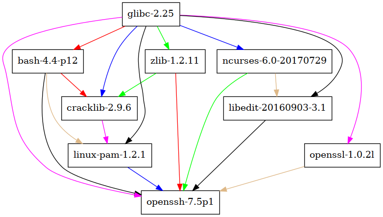

Nix

for functional programmers
Franz Pletz (fpletz) & Robin Gloster (globin)
Mayflower GmbH
About the speakers
Franz Pletz
Robin Gloster
Both
Package Management

Let's talk about…
Features of a Typical Package Manager
- codifies software build process
- creates a distributable package
- manages package lifecycle
- maintains a package database or repo
- ensures package integrity & authenticity
- version & dependency management
Procedural Approach

Build results depend on inherited state
Package installs modify state
Procedural Approach
Typical WTF Moments
- Package compiles/runs on machine A but fails on machine B
- Installing packages fails, system ends up in a broken or unknown state
- New version of a library changes ABI, all dependent packages are broken
- User modified a file of installed package, gets overwritten by package upgrade
Purely Functional?
Functions are pure iff
- Always evaluate the same result value given the same argument values
- Evaluation of the result causes no semantically observable side effect
Functional Approach

- Reproducible
- Atomic
- Conflict-free
- Immutable
Nix

The purely functional package manager
What is Nix?
- PhD thesis of Eelco Dolstra (2006)
"The Purely Functional Deployment Model" - build results only depend on declared inputs
- implemented in C++
- uses minimal purely functional language
- describes package builds
- defines dependencies
- lazily evaluated, dynamically typed
Key Features of Nix
- immutable package store
- atomic upgrades & rollbacks
- isolated build environment
- shell environments
- runs on POSIX (Linux, *BSD, OS X)
- multi-version support
- multi-user support
- source/binary model
Standard Package Set
nixpkgs
- Github Repository
- Lots of abstractions
- fetch sources from git, mercurial, …
- a standard build environment
- wrappers for lots of build systems: cabal, stack, ocaml, idris, coq
- > 10.000 packages available
- can be used on other Unix systems & Darwin
Purity in Nix
/nix/store/i3vxa3hcxayzkr6w8x3z37rmxa95fdk2-openssh-7.5p1
A package is an output of a pure function. It depends only on the function inputs, without any side effects.
- functional language
- linux namespaces
- no networking
- patched shebangs
- /nix/store mounted read-only
- patches to tooling
Impurity in Nix
src = fetchurl {
url = "mirror://openbsd/OpenSSH/portable/${name}.tar.gz";
sha256 = "1k5y1wi29d47cgizbryxrhc1fbjsba2x8l5mqfa9b9nadnd9iyrz";
};
src = fetchFromGitHub {
owner = "ponylang";
repo = "ponyc";
rev = "4eec8a9b0d9936b2a0249bd17fd7a2caac6aaa9c";
sha256 = "184x2jivp7826i60rf0dpx0a9dg5rsj56dv0cll28as4nyqfmna2";
};
Fixed Output Derivations
For impure derivations where the output is known before the build.
Guarded by cryptographic hash of output.
Nix Language

Basic Types
Strongly Typed
Not Statically Typed
Functions
Let Bindings
Lists
Attribute Sets
Useful Resources
- Nix manual
- Interactive tour of Nix
- NixOS manual
- Nix Pills
Can I use Nix in production?
We do. Others too.
Even customers.
Thanks!
Find these slides online:
https://github.com/mayflower/nixos-intro-slides
Any questions?
We're in #nixos on Freenode: fpletz & globin
or via eMail: nix@mayflower.de
Bonus Slides
The simplest Nix derivation
$ cat default.nix
derivation {
name = "my-package";
builder = ./builder.sh;
system = "x86-64-linux";
src = /home/user/source.tar.gz;
}
$ cat builder.sh
tar xvfz $src
cd program-1.0/
mkdir -p $out/bin
cp program.sh $out/bin/program$ nix-build
/nix/store/cpcx3df4s2d51ddm01qm0w9x1nv8mpfq-my-package
$ ./result/bin/programSources of Impurity
- wetware bugs
- "hotfixes" in production
- "debugging" in production
- package upgrades
- operating system upgrades
- broken software modifying its own configuration
Dependencies of openssh
openssh Closure
$ du -sh $(nix-store -qR `nix-build -A openssh`)
23M /nix/store/r7139ibn27h4agx21n753mbsw1cbhy6i-glibc-2.25
1.2M /nix/store/fjj3bf0ma00c2jsnfwmng5nhrc1plj2d-bash-4.4-p12
124K /nix/store/jbvpic4p7hnpjz056mzk86xn1rspx4ii-zlib-1.2.11
1.1M /nix/store/bmfb3gll7pynh6mkw436qqf72jhf66is-cracklib-2.9.6
7.6M /nix/store/jsfsvq7lvpf949pz22xiwr84ca56vzw9-ncurses-6.0-20170729
2.7M /nix/store/nfh1grxcx5sfzx76pa66jcd9anrmh6y5-linux-pam-1.2.1
3.4M /nix/store/sj0y2r4ly4hw4lghj7ygp3cpa8crfa7a-openssl-1.0.2l
292K /nix/store/zq7zz39c9wnzjav079w7f2zn6j6f05xj-libedit-20160903-3.1
5.1M /nix/store/i3vxa3hcxayzkr6w8x3z37rmxa95fdk2-openssh-7.5p1
openssh Store Path
$ tree `nix-build -A openssh`
/nix/store/i3vxa3hcxayzkr6w8x3z37rmxa95fdk2-openssh-7.5p1
├── bin
│ ├── scp
│ ├── sftp
│ ├── ssh
│ ├── ssh-add
│ ├── ssh-agent
│ ├── ssh-copy-id
│ ├── ssh-keygen
│ ├── ssh-keyscan
│ └── sshd
├── etc
│ └── ssh
│ ├── moduli
│ ├── ssh_config
│ └── sshd_config
├── libexec
│ ├── sftp-server
│ ├── ssh-keysign
│ └── ssh-pkcs11-helper
└── share
└── man
├── man1
│ ├── scp.1.gz
│ ├── sftp.1.gz
│ ├── ssh-add.1.gz
...
Dependencies are hardcoded
$ ldd `which ssh`
linux-vdso.so.1 (0x00007ffcaa3c1000)
libcrypto.so.1.0.0 => /nix/store/sj0y2r4ly4hw4lghj7ygp3cpa8crfa7a-openssl-1.0.2l/lib/libcrypto.so.1.0.0 (0x00007f302ff72000)
libdl.so.2 => /nix/store/r7139ibn27h4agx21n753mbsw1cbhy6i-glibc-2.25/lib/libdl.so.2 (0x00007f302fd6e000)
libutil.so.1 => /nix/store/r7139ibn27h4agx21n753mbsw1cbhy6i-glibc-2.25/lib/libutil.so.1 (0x00007f302fb6b000)
libz.so.1 => /nix/store/jbvpic4p7hnpjz056mzk86xn1rspx4ii-zlib-1.2.11/lib/libz.so.1 (0x00007f302f954000)
libcrypt.so.1 => /nix/store/r7139ibn27h4agx21n753mbsw1cbhy6i-glibc-2.25/lib/libcrypt.so.1 (0x00007f302f719000)
libresolv.so.2 => /nix/store/r7139ibn27h4agx21n753mbsw1cbhy6i-glibc-2.25/lib/libresolv.so.2 (0x00007f302f503000)
libc.so.6 => /nix/store/r7139ibn27h4agx21n753mbsw1cbhy6i-glibc-2.25/lib/libc.so.6 (0x00007f302f164000)
/nix/store/r7139ibn27h4agx21n753mbsw1cbhy6i-glibc-2.25/lib/ld-linux-x86-64.so.2 (0x00007f30303ad000)
$ cat `which dehydrated`
#! /nix/store/fjj3bf0ma00c2jsnfwmng5nhrc1plj2d-bash-4.4-p12/bin/bash -e
export PATH=/nix/store/in8w04hmwyi7zh77a9jalzppiknwim2k-openssl-1.0.2l-bin/bin:/nix/store/9jjhadd4ipi20178bhp9q4b6w2jmshb0-coreutils-8.28/bin:/nix/store/hc2qa67dxw1db3sm76q9gwj0p4y6rq33-gnused-4.4/bin:/nix/store/wq819qmiminzrl1afvzy2dkxrxcac01h-gnugrep-3.1/bin:/nix/store/02ffk8wnyaffiq344vliwmnv5pl24ss0-diffutils-3.6/bin:/nix/store/bgkb2h2n8sxq37mn6ax8rf0zgfnw6n4d-curl-7.55.1-bin/bin:/nix/store/gr2ng003zxhql3vpy0xa8x7v793z9mr0-gawk-4.1.4/bin${PATH:+:}$PATH
exec -a "$0" "/nix/store/8c6bvca47rx957bx4hg6mjzn9mqg8gx2-dehydrated-0.4.0/bin/.dehydrated-wrapped" "${extraFlagsArray[@]}" "$@"
Profiles & User Environments

Declarative Configuration
{
boot.loader.grub.device = "/dev/sda";
fileSystems."/".device = "/dev/sda1";
networking.hostname = "webserver";
networking.firewall.allowedTCPPorts = [ 80 443 ];
environment.systemPackages = with pkgs; [ htop vim wget ];
services = {
openssh.enable = true;
nginx = {
enable = true;
virtualHosts."service.example.com" = {
forceSSL = true;
enableACME = true;
location."/".proxyPass = "https://backend:3000/";
};
};
};
}
Real World Example
GNU hello and chrony
{ stdenv, fetchurl }: stdenv.mkDerivation rec { name = "hello-2.10"; src = fetchurl { url = "mirror://gnu/hello/${name}.tar.gz"; sha256 = "0ssi1wpaf7plaswqqjwigppsg5fyh99vdlb9kzl7c9lng89ndq1i"; }; meta = { description = "A program that produces a familiar, friendly greeting"; longDescription = '' GNU Hello is a program that prints "Hello, world!" when you run it. It is fully customizable. ''; homepage = http://www.gnu.org/software/hello/manual/; license = stdenv.lib.licenses.gpl3Plus; maintainers = [ stdenv.lib.maintainers.eelco ]; platforms = stdenv.lib.platforms.all; }; }
{ stdenv, fetchurl, pkgconfig, libcap, readline, texinfo, nss, nspr , libseccomp }: stdenv.mkDerivation rec { name = "chrony-${version}"; version = "3.1"; src = fetchurl { url = "http://download.tuxfamily.org/chrony/${name}.tar.gz"; sha256 = "0xb03dya1zhcn1gch2v2ynifxw95g8m3plr9q4ys0s3pvgf0g4cx"; }; buildInputs = [ readline texinfo nss nspr libcap libseccomp ]; nativeBuildInputs = [ pkgconfig ]; configureFlags = [ "--chronyvardir=$(out)/var/lib/chrony" "--enable-scfilter" ]; }
nix-shell
Just like
virtualenv, bundler, rvm
but for all packages!
And for all programming language specific package managers like
npm, cabal, pip, gem, go, rust, nuget, bower
nix-shell
Imperative Environments
[fpletz@yolovo:~]$ python
python: Command not found
[fpletz@yolovo:~]$ nix-shell -p python
[nix-shell:~/src/nixpkgs]$ python
Python 2.7.13 (default, Dec 17 2016, 20:05:07)
[GCC 6.4.0] on linux2
Type "help", "copyright", "credits" or "license" for more information.
>>>
nix-shell
Imperative Environments
[nix-shell:~]$ python -c 'import requests'
ImportError: No module named requests
[nix-shell:~]$ exit
[fpletz@yolovo:~]$ nix-shell -p python pythonPackages.requests
[nix-shell:~]$ python -c 'import requests'
nix-shell
Declarative environments for your project
with import <nixpkgs> {}; {
env = stdenv.mkDerivation {
name = "pyrequests-env";
buildInputs = [
python
pythonPackages.requests
];
};
}
$ python -c 'import requests'
ImportError: No module named requests
$ nix-shell --pure
$ python -c 'import requests'
$
Sources